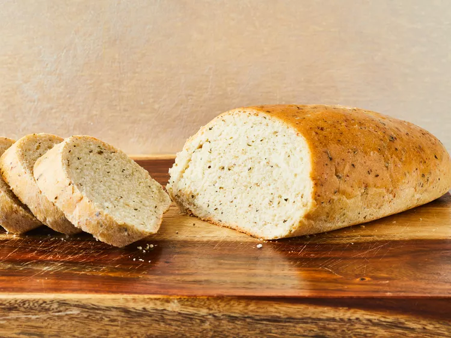

Italian herb bread

This aromatic herb bread made with flavorful Italian herbs and Roman cheese
goes well with any dinner. The dough can also be used to make pizza.
Ingredients
- 2 cups warm water (110 degrees F/45 degrees C)
- 2 tablespoons white sugar
- 2 (.25 ounce) packages active dry yeast
- 6 cups bread flour
- ½ cup grated Romano cheese
- ¼ cup olive oil
- 1 tablespoon salt
- 1 tablespoon dried basil
- 1 tablespoon dried oregano
- 1 teaspoon garlic powder
- 1 teaspoon onion powder
Directions
-
Gather all ingredients.
-
Mix warm water, sugar, and yeast together in a large bowl; let sit
until mixture is foamy, about 5 minutes.
-
Stir 3 cups flour, Romano cheese, olive oil, salt, basil, oregano, garlic
powder, and onion powder into yeast mixture. Gradually mix in remaining 3
cups flour until incorporated; dough will be stiff.
-
Knead dough on a lightly floured surface until smooth and rubbery, 5 to 10 minutes.
-
Place dough into an oiled bowl and turn until the surface is coated. Cover with a
damp dish towel and let rise until doubled in volume, about 1 hour.
-
Punch dough down to release air; shape into two loaves. Place each loaf into a greased
9x5-inch loaf pan. Let rise until doubled in volume, about 30 minutes.
-
Preheat the oven to 350 degrees F (175 degrees C).
-
Bake in the preheated oven for 35 minutes. Remove loaves from the pans and let cool
on wire racks for at least 15 minutes before slicing.